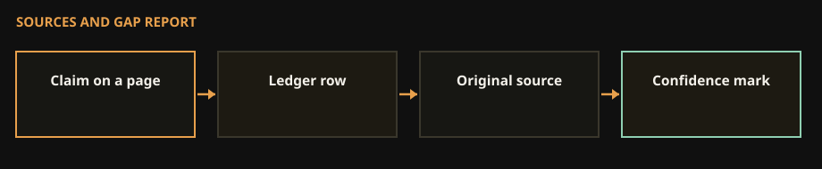

Sources and gap report
The ledger forms the audit trail for this site. A claim with no row has no place as a fact on a tool page.

Source ledger, 60 rows
Each row maps one claim set to one source. Ten articles on one press release count as one origin. Confidence text comes from the research report.
| # | Claim | Link | Author or publisher | Date | Confidence |
|---|---|---|---|---|---|
| 1 | Grok 4.1 launch, 64.78%, LMArena 1483 | Source | xAI (official) | 2025-11-17 | High (opened) |
| 2 | Grok 4.7 specs/price, 21 Sep 2026 | Source | SpaceXSI Docs (official) | 2026-09-21 | High (index of official page) |
| 3 | Grok 5 not released, 4.7 current (19 Nov) | Source | GrokMag tracker | 2026-11-19 | Medium |
| 4 | Grok 5 no specs/date; 4.5/4.6/4.7 lineage | Source | GeoToolbox | Nov 2026 | Medium-Low |
| 5 | Grok Bot beta, shared computer, use cases | Source | AITechArchive | Sep 2026 (verified 2026-09-15) | Medium-Low |
| 6 | Grok Bot setup, VM, plans, teach-a-task context | Source | AITechArchive | Nov 2026 (verified 2026-11-10) | Medium-Low |
| 7 | Galaxy field notes: PM primitives, double-digit PRs, templates | Source | unicodef1wn (event transcription) | Sep 2026 | Medium-Low |
| 8 | Sanchez Dora/Brody, 15 bots, 10 replies/2 calls | Source | Codie Sanchez | 2026-11-13 | Low (self-reported) |
| 9 | Sanchez 5-bot $100 experiment summary | Source | MuzzDang (summary of her YouTube video) | 2026-11-13 | Low |
| 10 | Sanchez Galaxy: sell to 3, unique-data magnets | Source | Brillyance founder notes | 2026-09-15 event | Medium-Low |
| 11 | Fable 5.2/Mythos 5.2, Opus 5.5, Sonnet 5.5 dates | Source | Anthropic (official homepage index) | 2026-11-09 / 09-22 / 09-28 | Medium-High |
| 12 | Claude lineup IDs/prices/context (9 Nov) | Source | GeoToolbox (from Anthropic docs) | 2026-11-09 | Medium |
| 13 | Claude Code changelog 19 Nov 2026 entry | Source | Anthropic (official) | 2026-11-19 | High (opened) |
| 14 | Claude Code 2.1.325, 13 Nov 2026 | Source | AI Drops (from official notes) | 2026-11-13 | Medium |
| 15 | Steering: CLAUDE.md/skills/subagents/hooks rules | Source | Anthropic / Claude (official) | 2026 (read 2026-11-20) | High (opened) |
| 16 | Cherny workflow: 5 parallel, Opus+thinking, CLAUDE.md, /commit-push-pr | Source | VentureBeat | Jan 2026 | Medium-High |
| 17 | Cherny tips compilation incl. worktrees, teleport | Source | Anup (compilation of 3 X threads) | Jan–Feb 2026 | Medium |
| 18 | Verbatim Cherny team prompts (31 Jan thread) | Source | snowan (transcription) | 2026-01-31 | Medium |
| 19 | Multi-agent research system, +90.2%, ~15× tokens | Source | Anthropic Engineering (Hadfield et al.) | 2025-06-13 | High |
| 20 | How Claude Code is built; ~5 releases/eng/day | Source | Gergely Orosz, Pragmatic Engineer | 2025 (read Nov 2026) | Medium |
| 21 | Duet: preview, Opus 5.5, morning brief, waitlist | Source | Engadget | 2026-10-21 | High (with #22, #23) |
| 22 | Duet details, approvals, classifiers | Source | Juli Clover, MacRumors | 2026-10-21 | High |
| 23 | Duet aimed at SMB/professionals, VM + browser | Source | Computerworld | 2026-10-21 | Medium-High |
| 24 | Anthropic >80–90% code, 8× claims | Source | NewsPoint/TOI summary of Anthropic paper | 2026-06-06 | Low-Medium |
| 25 | Gemini 3 Pro + Antigravity launch | Source | Google (official) | 2025-11-18 | High (opened) |
| 26 | Gemini 4 Argon GA + Carbon announced (Oct recap) | Source | Google (official) | 2026-11-02 | High (index) |
| 27 | Argon in Antigravity examples, availability | Source | Google (official) | 2026-10-27 | Medium-High (index) |
| 28 | Gemini 3.5 Pro never shipped; Argon pricing/dates | Source | Codersera (citing Reuters 2026-10-01) | Oct 2026 | Medium-Low |
| 29 | Antigravity 2.0 ecosystem (app/IDE/CLI/SDK), Projects | Source | Google Codelabs (official) | 2026 | Medium-High (index) |
| 30 | Antigravity /goal oracle loop codelab | Source | HappyCode / GDE sprint | 2026 | Medium |
| 31 | Antigravity Dynamic Workflows, 13 Nov 2026 | Source | AI Frontier Post | Nov 2026 | Medium-Low (single) |
| 32 | Codex CLI 0.169.0, 13 Nov 2026 (official changelog) | Source | OpenAI (official, via index) | 2026-11-13 | Medium-High |
| 33 | Harness engineering: 0 manual lines, ~1M LOC, AGENTS.md as TOC, loops | Source | OpenAI (official) | Feb 2026 (per secondary dating) | High (opened) |
| 34 | Codex GitHub Agent HQ, @codex review patterns | Source | Daniel Vaughan (Codex KB) | 2026-04-16 | Medium-Low |
| 35 | Codex model retirements/replacements | Source | CodexHow (from OpenAI docs, checked 2026-10-28) | Oct 2026 | Medium-Low |
| 36 | dots launch: GPT-6 Astra, always-on, from Codex/ChatGPT | Source | TechCrunch | 2026-09-29 | High |
| 37 | dots architecture + no documented bot identity | Source | DataDome | Nov 2026 | Medium |
| 38 | Muse agent: Secure VM, Sentinel, Spark, approvals | Source | Meta (official newsroom) | 2026-09-08 | High (opened) |
| 39 | Muse for Small Business, 29 Sep 2026 | Source | NY Post | 2026-09-29 | Medium-Low |
| 40 | Muse Wonder/Wonder Full/Spark Open, prices, AA scores | Source | DeepLearning.AI, The Batch | Oct 2026 | Medium |
| 41 | Muse Code: subagents, skills interop, workflows, agents.json | Source | Meta (official docs, via index) | 2026 | Medium-High |
| 42 | Muse Code extending: hooks/MCP/CI, observer agents | Source | Meta (official docs, via index) | 2026 | Medium-High |
| 43 | Best MCP servers for coding (Nov 2026 check) | Source | Questera | Nov 2026 | Medium |
| 44 | MCP shortlist + archived reference servers | Source | Reverbico | 2026-11-18 | Medium-Low |
| 45 | superpowers: methodology, skills, installs | Source | Jesse Vincent / Prime Radiant | repo created 2025-10-09 | High (README via index) |
| 46 | Pocock skills: 27 skills, v1.3.1/1.3.2, spine | Source | Roughworks (file-by-file review) | 2026-11-18 | Medium-High |
| 47 | Pocock skills repo + install + failure modes | Source | Matt Pocock | repo created 2026-02-03 | High (README via index) |
| 48 | Caveman: commands, levels, own benchmarks | Source | Julius Brussee | repo created 2026-04-04 | High (product) / Low (savings) |
| 49 | Hallmark: verbs, gates, themes (v1 account) | Source | Max Quimby, dev.to | Jul 2026 | Medium-Low |
| 50 | Hallmark current README (v2, fifty themes, tiers) | Source | Nutlope / Together AI | repo created 2026-04-27 | High (README via index) |
| 51 | pstack: /poteto-mode, 23 playbooks, 34 skills, installs | Source | DeepSeek Harness Plugins (README read 2026-11-16) | 2026-11-16 | Medium |
| 52 | Poteto team: 11k PRs, ~0.5% reverts (talk coverage) | Source | IFAI | Nov 2026 | Medium-Low |
| 53 | Poteto talk slides: 809→10,626 PRs, 227 contributors | Source | Sahil Verma (talk summary) | 2026-11-16 | Medium-Low |
| 54 | Tibo identity + workflow (interview summary) | Source | Leverage / Greg Isenberg interview | n.d. (read Nov 2026) | Medium-Low |
| 55 | Shah Labs production Claude Code workflow | Source | Mayank Shah, Shah Labs | ~Apr 2026 | Medium |
| 56 | Isenberg marketing-engineer brain (summary) | Source | Build Wiz AI Show (explainer of Isenberg's X article) | 2026-11-05 | Medium-Low |
| 57 | Isenberg agent spec + 50-example evals | Source | YouMind (mirror/summary of Isenberg X article) | 2026 | Medium-Low |
| 58 | Solo stack: $20 agent + Vercel + Supabase | Source | The AI Career Lab (checked 2026-06-30, updated 2026-10-31) | Oct 2026 | Medium |
| 59 | Grok prompt templates (DeepSearch patterns) | Source | Memons | 2026 | Low-Medium (third-party templates) |
| 60 | Vibe coding → agentic engineering, scaffold | Source | Sayed Ali Alkamel, dev.to | 2026 | Medium-Low |
Gap report
- Grok 5 and Grok 4.8: no verified release, spec or date.
- Claude Code exact patch for the 19 November 2026 changelog entry: no version string in source text.
- Codex exact default model on 20 November 2026: OpenAI pages disagree per tracker notes.
- Claude Duet plan list: sources split on an Ultra tier.
- Named DeepMind engineer personal workflows: none in sources.
- Dario Amodei personal workflow: none in sources.
- Mayank Shah identity: ambiguous, best match flagged on the Profiles page.
- Muse Confidential VM ship status: no verified source.
- Independent tests of Grok Bot, Duet, dots and Muse agent quality: none in sources. All quality claims rest on vendor or self reports.
- Exact repo links for GitHub MCP, Playwright MCP and Context7: no verbatim link in the report. This site links those tools via round up rows 43 and 44 in the ledger.
- Repo star counts: sources conflict. This site prints no star counts.
Library by type
Official docs and posts: ledger rows 1, 2, 11, 13, 15, 19, 25, 26, 27, 29, 32, 33, 38, 41, 42, plus repo rows 45, 47, 48, 50.
Trade and practitioner articles: rows 16, 17, 20, 43, 46, 55.
Videos, talks and podcasts in sources: Cherny X threads and a Pragmatic Engineer podcast on 4 March 2026, Lauren Tan AI Engineer Code Summit talk in November 2026, Codie Sanchez YouTube test video with id yO5O_ngyA_8 per a summary, Greg Isenberg Startup Ideas Podcast in May 2026, and Grok Bot Galaxy streams on 15 to 17 September 2026.
Social sources: row 8 (Sanchez reel), row 53 (Threads talk summary), row 18 (Cherny thread transcript).
Ledger addendum, round 2 niche sources
Rows N1 to N26 come from the round 2 niche sweep on 20 November 2026. Full claim text, source links and confidence reasons sit on the Niche page. Base ledger rows 1 to 60 stand as built. Lab 3 ran on the base 60 rows.
| ID | Title | Author | Type | Date | Version | Key claims | Confidence |
|---|---|---|---|---|---|---|---|
| N1 | Harper Reed workflow post | Harper Reed | Blog | 16 Feb 2025 | See Niche page | Spec pipeline and llm CLI tasks | High |
| N1 | Willison sub agents tag page | Simon Willison | Blog | 2025 | See Niche page | Sub agent use, 55.4k to 116.1k tokens each | High |
| N1 | Hashimoto adoption journey | Mitchell Hashimoto | Blog | 5 Feb 2026 | See Niche page | End of Day Agents, harness rules | High |
| N1 | Ball Amp time capsule 6 | Thorsten Ball | Talk transcript | Oct 2026 | See Niche page | Self wake schedules, full SDLC view | High |
| N1 | Yegge Gas Town post | Steve Yegge | Blog | 1 Jan 2026 | See Niche page | 20 to 30 instance orchestrator | High |
| N1 | Litt code like a surgeon | Geoffrey Litt | Blog | 24 Oct 2025 | See Niche page | Async secondary tasks, surgeon model | Medium High |
| N1 | Ronacher agentic coding | Armin Ronacher | Blog | 12 Jun 2025 | See Niche page | Yolo in Docker, one log file, CLI first | Medium High |
| N1 | Breunig fix your context | Drew Breunig | Blog | 26 Jun 2025 | See Niche page | Four context failures, six tactics | Medium High |
| N1 | Yan news agents | Eugene Yan | Blog | 4 May 2025 | See Niche page | Q CLI plus 3 tmux sub agents, MCP RSS | High |
| N1 | Appleton planning agents | Maggie Appleton | Talk text | Not in source | See Niche page | Plan critique, review load limit | High |
| N1 | Latent Space Claude Code episode | swyx and Alessio, Cherny and Wu | Podcast transcript | 2025 | See Niche page | Fleet talk, 6 dollars per day average note | High |
| N1 | Lenny Podcast Cherny episode | Lenny Rachitsky, Boris Cherny | Podcast | 19 Feb 2026 | See Niche page | 100 percent AI code claim, 10 to 30 PRs | Medium High |
| N1 | Pragmatic Engineer Hashimoto | Gergely Orosz, Mitchell Hashimoto | Podcast notes | 25 Feb 2026 | See Niche page | Always one agent in background | High |
| N1 | Interconnects Get Good at Agents | Nathan Lambert | Newsletter | Jan 2026, date conflict | See Niche page | Pro plans, Opus builds, Spark runs | Medium High |
| N1 | Osmani 2026 workflow post | Addy Osmani | Substack | 4 Jan 2026 | See Niche page | Spec plan chunks, context packs | Medium |
| N1 | swyx Claude Mods | swyx, Dan McAteer | Newsletter | Not in source | See Niche page | Supervisor mod, 5 to 6k tokens per check | Low Medium |
| N1 | Ask HN agentic setup thread | Hacker News community | Forum | 4 Nov 2026 | See Niche page | Worktree per agent, fresh reviewer | Medium |
| N1 | Show HN 3 agents 3 days | Hacker News poster | Forum | Not in source | See Niche page | Headless trio, Beads, validator merge | Medium |
| N1 | Reddit Kithland post | r/ClaudeAI poster | Forum | 4 Nov 2026 | See Niche page | 20B token self report | Low |
| N1 | ku5ic knowledge discipline | ku5ic | Substack | Not in source | See Niche page | 150KB config system, guard hooks | Medium |
| N1 | Agentic Reading List | Curated list | List | 2024 to 2026 | See Niche page | 216 dated posts | Medium |
| N1 | Theo token maxing page | Theo, transcript secondary | Video summary | 1 Oct 2026 | See Niche page | Nine subscriptions, 10 plus agents | Medium |
| N1 | WorldofAI Tracer video page | WorldofAI, transcript secondary | Video summary | 2026 | See Niche page | Two agents, one workspace, cross review | Medium |
| N1 | OpenAI jagged frontier post | OpenAI | Report | 18 Nov 2026 | See Niche page | Median 2,400 dollars per day, p90 23,000 | Medium High |
| N1 | Anthropic Institute self build post | Anthropic Institute | Report | 2026 | See Niche page | 80 percent AI code, safety swarm cost | High |
| N1 | Anthropic costs docs | Anthropic | Docs | Nov 2026 | See Niche page | 13 dollars per dev per active day | Medium High |
Visual map of this page
Three views of one page: a Mermaid flow for work order, a markmap for concept groups, and a read guide for the flow.
Mermaid source, for offline read
flowchart LR A[Page claim] --> B[Ledger row 1 to 60] B --> C[Original URL] C --> D[Confidence and gap state]
How to read the flow diagram. Step 1: start at the left box. Step 2: follow each arrow to the next stage. Step 3: at a branch box, read both paths before a choice. Step 4: a loop arrow means work returns for one more pass vs a test.
Markmap: concepts on this page
- Sources and gap report
- Ledger
- 60 rows
- Author, date, link
- Confidence per row
- Gaps
- Grok 5
- Exact patches
- DeepMind named workflows
- Library
- Official posts
- Trade articles
- Videos and talks
- Ledger